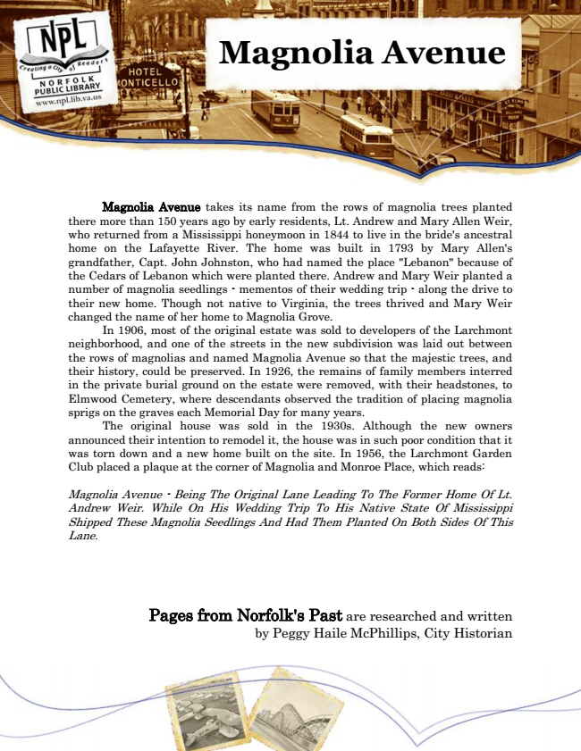

Magnolia Avenue
Magnolia Avenue takes its name from the rows of magnolia trees planted there more than 150 years ago by early residents, Lt. Andrew and Mary Allen Weir, who returned from a Mississippi honeymoon in 1844 to live in the bride's ancestral home on the Lafayette River. The home was built in 1793 by Mary Allen's grandfather, Capt. John Johnston, who had named the place "Lebanon" because of the Cedars of Lebanon which were planted there. Andrew and Mary Weir planted a number of magnolia seedlings - mementos of their wedding trip - along the drive to their new home. Though not native to Virginia, the trees thrived and Mary Weir changed the name of her home to Magnolia Grove.
In 1906, most of the original estate was sold to developers of the Larchmont neighborhood, and one of the streets in the new subdivision was laid out between the rows of magnolias and named Magnolia Avenue so that the majestic trees, and their history, could be preserved. In 1926, the remains of family members interred in the private burial ground on the estate were removed, with their headstones, to Elmwood Cemetery, where descendants observed the tradition of placing magnolia sprigs on the graves each Memorial Day for many years.
The original house was sold in the 1930s. Although the new owners announced their intention to remodel it, the house was in such poor condition that it was torn down and a new home built on the site. In 1956, the Larchmont Garden Club placed a plaque at the corner of Magnolia and Monroe Place, which reads:
Magnolia Avenue - Being The Original Lane Leading To The Former Home Of Lt. Andrew Weir. While On His Wedding Trip To His Native State Of Mississippi Shipped These Magnolia Seedlings And Had Them Planted On Both Sides Of This Lane.
Pages from Norfolk's Past are researched and written by Peggy Haile McPhillips, City Historian